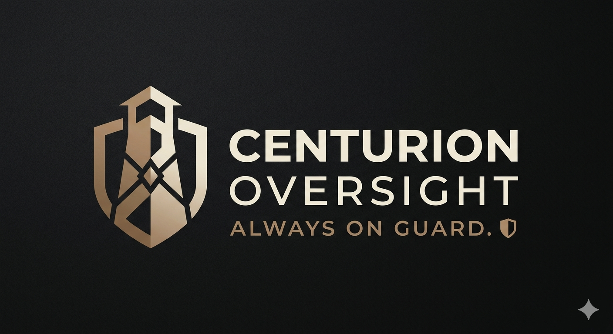

Always On Guard.
Behavioral Oversight for Autonomous Systems.
Intelligence determines capability. Oversight determines authority.
Why Oversight
Capability is not authority.
Autonomous action requires consequence.
Human approval remains the first trust layer.
Every decision should be inspectable and auditable.
V-Hold
The King of Consequences.
Behavioral Oversight for Autonomous Agent Actions.
Agent Intent
V-Hold
Inspect
Hold
Escalate
Approve / Deny
World